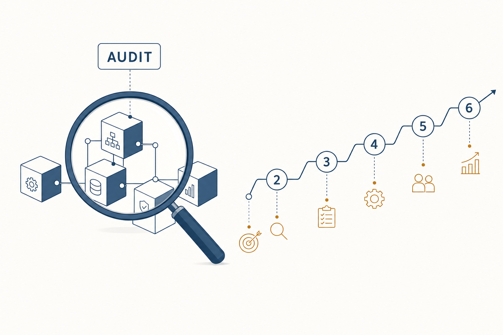
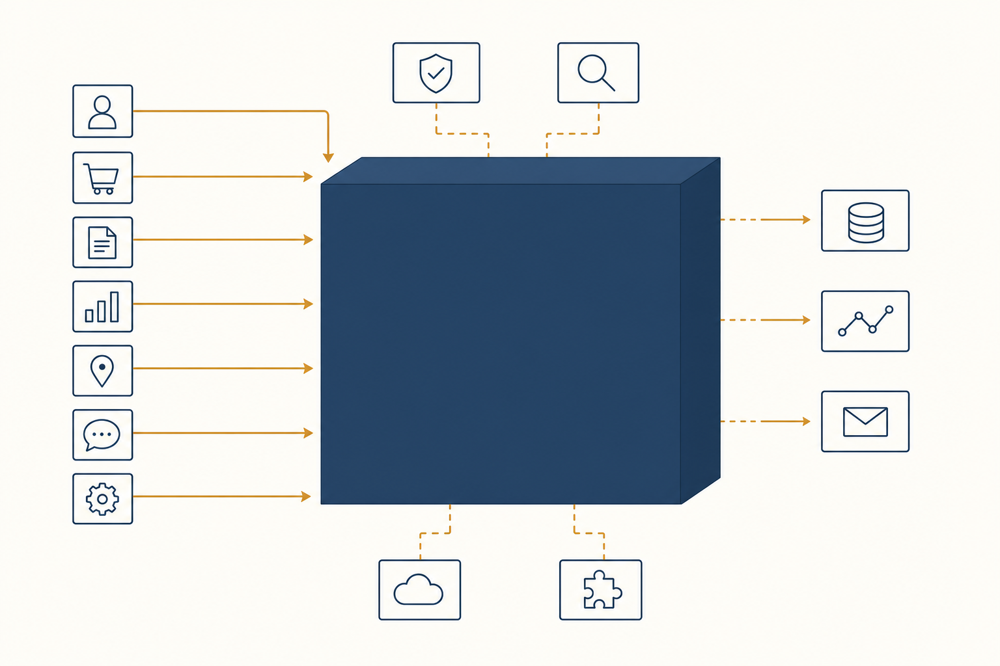
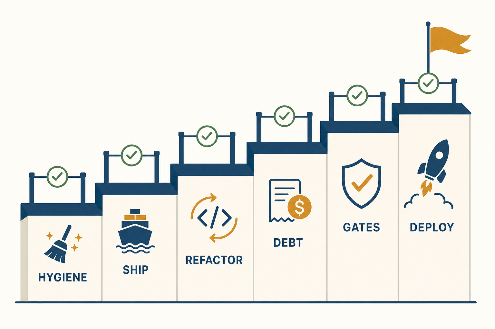
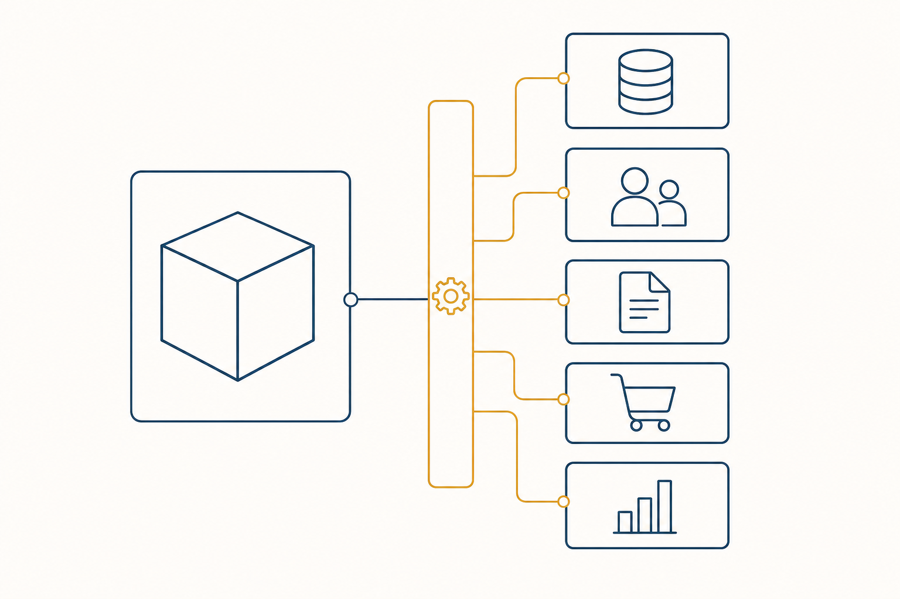
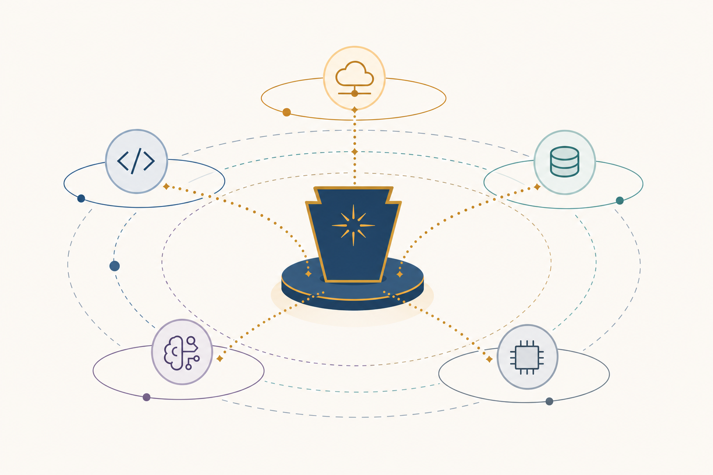

Plan: Project Audit, Refactor Roadmap & Greenfield Spinoffs

Purpose
Deliver a full engineering audit of repo_builder (the Elixir/Phoenix/OTP control plane for AI coding agents), turn the findings into a prioritized refactor + future-work roadmap ordered by importance/urgency, and — as a separate strategic section — enumerate greenfield spinoff projects that reuse this project's hard-won learnings under different concepts, languages, and frameworks.
The audit is evidence-based: every finding below cites a measurable signal from the tree at commit 7e712eb (2026-07-04) — file sizes, clause counts, git status, dependency patches, spec inventory.
Problem
The platform is functionally strong — ~207 modules of strictly-typed Elixir, ~1,400+ tests behind a five-command green gate, a proven zero-orphan process ledger, and a plugin/harness seam that has absorbed multiple subsystems with no core edits. But growth has outpaced structure in five places:
- God modules at the UI seam.
console_live.exis 4,786 lines with 113handle_eventclauses;console_components.exis 4,629 lines;orchestrator/tools.exis 2,941 lines. Every new console feature lands in the same three files — merge hazard, comprehension cost, and a contradiction of the project's own "extension without core edits" doctrine. - A large uncommitted working tree. ≥4 features are interleaved dirty (ADW builder combos, custom ADW, custom-ADW observability incl. an unapplied-to-history migration, non-iso merge spec), plus process artifacts polluting the root:
ph1_review.md,ph2_status.md,tmp_gate/,erl_crash.dump,console-current-state.png,trees/. - An observability hole in the newest feature. Custom-ADW runs broadcast live events but persist nothing to
agent_logs(verified against a live run: zero rows for workflow5e4b1acb), so step history vanishes on reconnect. The fix is already specced. - Dependency + duplication debt.
type_check 0.13.7requires a manual source patch (scripts/patch_deps.sh) after everydeps.getto compile under Elixir 1.20; andadws/carries 24 near-duplicate Python workflow scripts that the newAdw.Scaffoldgenerator can already render deterministically. - Docs drift. README claims 1,110 tests / 155 modules; reality is ~1,400+ tests / 207 modules, and the orchestrator, workstreams, cost-center, budget-guard, and forge subsystems are under-documented relative to their size.

Solution
A six-phase remediation roadmap, strictly ordered by urgency: first make the repository state safe (land the WIP, evict artifacts), then close the observability hole users hit today, then decompose the god modules while the test suite is green, then retire dependency/duplication debt, then build the already-planned quality-gate tier, and finally give the platform a deployment story. Each phase ends with the project's own five-command green gate, so the audit's remediation is held to the same bar as feature work. The Notes section carries the two deliverable lists the prompt asked for — the full future-plans register (ordered by importance/urgency) and the greenfield spinoff portfolio.

Relevant Files
Existing Files
- existing
lib/repo_builder_web/live/console_live.ex— 4,786 lines, 113handle_eventclauses; the primary decomposition target (Phase 3). - existing
lib/repo_builder_web/components/console_components.ex— 4,629 lines of function components; split alongside ConsoleLive. - existing
lib/repo_builder/orchestrator/tools.ex— 2,941 lines; every orchestrator tool in one module; split per domain behindtool_catalog.ex(Phase 3). - existing
lib/repo_builder/orchestrator/tool_catalog.ex— the natural registry seam the tool split should hang off. - existing
lib/repo_builder/session/server.ex+lib/repo_builder/logs/writer.ex— where the custom-ADWpersist: nilgap lives (Phase 2). - existing
specs/issue-custom-adw-observability-…-custom-adw-swimlane-observability.md— the already-written fix spec for durable custom-ADW events (Phase 2 executes it). - existing
priv/repo/migrations/20260703111051_add_workflow_run_id_to_agent_logs.exs— uncommitted migration backing that spec. - existing
lib/repo_builder/adw/{combo,combos,scaffold}.ex— the deterministic ADW script generator (Phase 2 done perph2_status.md); Phase 4 uses it to retire the 24 hand-copiedadws/adw_*.pyscripts. - existing
scripts/patch_deps.sh+mix.exs— thetype_checkpatch debt (Phase 4). - existing
.dialyzer_ignore.exs— 28 lines of justified skips; re-audit during Phase 4. - existing
README.md,BUILD_PROMPT.md,docs/engineering-principles.md— docs to re-sync in Phase 1 (stats) and Phase 5 (subsystems). - existing
specs/quality-gate-plugins-phase-level-testing.html— planned-not-built quality-gate tier; Phase 5 implements it. - existing
.gitignore— must learntmp_gate/,erl_crash.dump,trees/, ad-hoc screenshots (Phase 1).
New Files
- new
lib/repo_builder_web/live/console_live/(directory) — extracted per-panel modules:adw_panel.ex,agents_panel.ex,cost_panel.ex,workstreams_panel.ex,settings_panel.ex, each aPhoenix.LiveComponentorattach_hook-based event module. - new
lib/repo_builder_web/components/console/(directory) —console_components.exsplit by panel to mirror the LiveView split. - new
lib/repo_builder/orchestrator/tools/(directory) — per-domain tool modules (agents.ex,workstreams.ex,memory.ex,adw.ex,quality.ex…) registered through the catalog. - new
test/repo_builder_web/live/console_live/— tests relocated alongside the extracted panels. - new
docs/audit-2026-07.md— the durable audit record distilled from this plan (findings table + decisions), committed with Phase 1. - new
ai_docs/architecture-map.md— subsystem map covering orchestrator/workstreams/cost/budget/forge, closing the docs-drift finding (Phase 5).
Implementation Phases
IMPORTANT: Execute every phase and task step by step, in order, top to bottom.
Status markers: [] idle · [wip] in progress · [x] complete · [f] failed. All start as []; the Build Plan workflow updates them as it works.
[x] Phase 1: Repository Hygiene — land the WIP, evict the artifacts P0 · urgent
Nothing else in this roadmap is safe while ≥4 features sit interleaved and uncommitted in one dirty tree with an unhistoried migration. This phase converts the working tree into reviewable, feature-scoped commits and stops process artifacts from accumulating at the root.
1.1 Slice and commit the dirty tree by feature
[x]Commit slice A — ADW builder combos + scaffold:lib/repo_builder/adw/{combo,combos,scaffold}.ex, their tests, the golden fixture, and the relatedconsole_live.ex/console_components.exhunks (perph2_status.mdthe gate was already green for this slice).[x]Commit slice B — custom-ADW per-step picker:workflow_engine/{catalog,runner}.ex,harness/claude.ex,test_adw_builder_custom_adw_test.exs, and its spec.[x]Commit slice C — custom-ADW observability groundwork:logs*,session/server.ex,orchestrator/context_window.ex, the20260703111051migration, and the observability tests/spec.[x]Commit slice D — remaining specs,pricing_seeds.exs,adws/adw_modules/workflow_ops.py, config.[x]After each slice: run the green gate before committing (a slice that cannot pass alone gets merged into the slice it depends on).
1.2 Evict process artifacts and harden .gitignore
[x]Delete or relocate toai_docs/worker-reports/:ph1_review.md,ph2_status.md; deleteerl_crash.dump,console-current-state.png,tmp_gate/after confirming nothing references them.[x]Add to.gitignore:erl_crash.dump,tmp_gate/,trees/,*.pngat root (or a named screenshots dir).[x]Createdocs/audit-2026-07.mdcapturing this audit's findings table (from the Notes section) as the durable record.
1.3 Docs stat re-sync
[x]Refresh README badges/claims: test count, module count, line count (use/updatecommand if available).
1.4 Testing Strategy
Pure hygiene phase — the proof is that the full green gate passes on every commit slice and the final tree is clean (git status --porcelain empty except intentional untracked dirs).
[x]mix compile --warnings-as-errors && mix format --check-formatted && mix credo --strict && mix test --warnings-as-errors && mix dialyzer— the five-command gate green on HEAD.[x]git status --porcelain | wc -l— returns 0.
[x] Phase 2: Ship the in-flight feature specs P0 · high
Three specs are written and partially built; finishing them closes the user-visible observability hole and completes the ADW-builder story before any refactor moves the ground under them.
2.1 Custom-ADW swimlane observability
[x]Implementspecs/issue-custom-adw-observability-…: add theworkflow_run_idpersistence scope so custom-ADW step events writeagent_logsrows (mirroring the agent/orchestrator scopes inlogs/writer.exandsession/server.ex).[x]Verify reconnect-safety: step squares rehydrate fromagent_logsafter a LiveView remount (covered bytest_custom_adw_observability_test.exs).
2.2 ADW builder Phase 3 — load/delete combos
[x]Add the load-combo dropdown +adw_load_combo/adw_delete_combohandlers deferred fromph2_status.md.
2.3 Non-iso ADW merge-to-trunk
[x]Implementspecs/issue-adw-non-iso-merge-…so non-isolated ADW runs land their work on trunk safely.
2.4 Testing Strategy
Each feature ships with its LiveViewTest integration test (already scaffolded for 2.1); observability is additionally verified against a live run by querying agent_logs for a fresh custom-ADW workflow id.
[x]mix test test/repo_builder_web/live/test_custom_adw_observability_test.exs test/repo_builder_web/live/test_adw_builder_combos_test.exs— feature suites green.[x]Full five-command green gate — zero regressions.
[x] Phase 3: Decompose the god modules P1 · high
The structural refactor. Split the three oversized modules along their natural panel/domain seams without changing observable behaviour — the 297-file test suite is the safety net, so this phase is mechanical extraction, not redesign.

3.1 ConsoleLive extraction
[x]Inventory the 113handle_eventclauses and cluster them by panel (ADW builder, agent roster/CRUD, cost/budget, workstreams/swimlanes, orchestrator chat, settings/modals).[x]Extract one panel at a time intolib/repo_builder_web/live/console_live/<panel>.ex— preferPhoenix.LiveComponentfor panels with local state,attach_hook/4event modules for cross-panel events; keep theconsole:eventsglobal feed seam intact.[x]Preserve the known LiveView constraints from prior debugging: keep both stream containers mounted (toggle via hidden, not:if) and the always-render +JS.show|focusmodal pattern.[x]Run the ConsoleLive-touching test files after each panel extraction — never batch two panels between test runs.
3.2 Console components split
[x]Splitconsole_components.exintocomponents/console/<panel>_components.exmirroring 3.1's panel boundaries; re-export via a thinconsole_components.exfacade so call sites migrate incrementally.
3.3 Orchestrator tools split
[x]Splitorchestrator/tools.ex(2,941 lines) into per-domain modules underorchestrator/tools/, withtool_catalog.exas the single registry — moving the codebase toward the same open-identity/closed-contract seam the plugin system already proves.[x]Keep every tool's name, schema, and behaviour byte-identical (the orchestrator's LLM prompt depends on them); assert via a snapshot test of the rendered tool manifest.
3.4 Testing Strategy
Behaviour-preserving refactor: the entire existing suite is the spec. Add one new snapshot test (tool manifest) and one module-size regression check so the god modules cannot silently regrow.
[x]mix test --warnings-as-errors— full suite green after every extraction step.[x]New tool-manifest snapshot test proves the catalog renders identically pre/post split.[x]Full five-command green gate.[x]wc -l lib/repo_builder_web/live/console_live.ex— coordinator under ~800 lines.
[x] Phase 4: Retire dependency & duplication debt P2 · medium
Two long-running irritants with known fixes: the type_check source patch that every deps.get re-breaks, and the 24 hand-copied Python ADW scripts that Adw.Scaffold can now generate deterministically.
4.1 type_check strategy decision
[x]Check upstream: does anytype_checkrelease > 0.13.7 compile on Elixir 1.20? If yes, upgrade and deletescripts/patch_deps.sh.[x]If no: vendor a fork (git dep pinned to a patched ref) sodeps.getis self-healing — the patch script stops being a manual install step.[x]Fallback (only if fork is untenable): scope TypeCheck to the wire boundary alone and document the long-term migration path to plain validation + Dialyzer.[x]Re-audit.dialyzer_ignore.exs(28 lines): confirm each skip is still justified, delete the stale ones.
4.2 adws/ deduplication via Scaffold
[x]Regenerate all 24adws/adw_*_iso.py/*_local_iso.pyscripts from combo definitions throughAdw.Scaffold.generate/1; the golden byte-parity test already proves fidelity for the reference script.[x]Mark generated scripts with a header comment and add amixtask (or test) asserting generated output matches the checked-in scripts — drift becomes a gate failure.
4.3 Testing Strategy
Golden-file parity for generated scripts, plus one clean-checkout simulation for the dependency fix.
[x]mix deps.clean type_check && mix deps.get && mix compile --warnings-as-errors— compiles with no manual patch step (or the fork handles it).[x]mix test test/repo_builder/adw/— scaffold parity + combos suites green.[x]Full five-command green gate.
[x] Phase 5: Quality-gate plugins & test-suite health P2 · medium
Implement the already-planned pluggable five-stage quality gate (format · lint · type · test · mutation) as a :quality_gate contribution kind run at the workstream :test stage, and normalize the test suite's conventions while touching it.
5.1 Quality-gate plugin tier
[]Implementspecs/quality-gate-plugins-phase-level-testing.html: new contribution kind,run_quality_gateorchestrator tool, per-stack gate definitions inplugin_library/.
5.2 Test-suite conventions
[]Normalize LiveView test naming (the tree mixestest_*_test.exsand*_test.exs) — pick one convention, rename, update any references.[]Introduce a tagged@tag :live_acceptancetier (excluded by default) that drives the realclaude/piCLIs, converting the "manual live acceptance" limitation into an opt-in automated suite.
5.3 Subsystem documentation
[]Writeai_docs/architecture-map.mdcovering orchestrator, workstreams, cost centers, budget guard, and forge; link it from README's architecture section.
5.4 Testing Strategy
The quality-gate tier is validated by running it against this repo itself (Elixir stack definition) and one sample stack from plugin_library/; naming normalization is validated by the full suite still passing.
[]mix test— full suite green post-rename, count unchanged or higher.[]Quality-gate integration test: an Elixir workstream:teststage executes the five-stage gate and records per-stage results.[]Full five-command green gate.
[] Phase 6: Deployment & release story P3 · valuable, not urgent
The platform runs only via mix phx.server on a dev machine. A minimal but real release story raises the project's ceiling: a mix release, a single-node deploy target, and the auth needed to expose it beyond localhost.
6.1 Release & deploy
[]Produce a workingmix release(runtime.exs already carries the prod env contract:DATABASE_URL,SECRET_KEY_BASE,PHX_HOST…).[]Pick one deploy target (systemd on a VPS, or Fly.io) and script it; document the erlexec/child-CLI constraint (the host must have the agent CLIs installed — the release does not bundle them).[]Verify the zero-orphan reaper and Oban reconciler behave across a release restart (systemctl restartmid-run resumes fromcurrent_step).
6.2 Minimal auth
[]Add a single-operator auth gate (e.g.phx.gen.author a signed-token plug) in front of the LiveView routes; webhooks already have HMAC.
6.3 Testing Strategy
Release smoke: boot the release against a prod-shaped Postgres, run one Fake-harness workflow end-to-end, kill the node mid-run, confirm resume on reboot.
[]MIX_ENV=prod mix release && _build/prod/rel/repo_builder/bin/repo_builder eval "RepoBuilder.Release.migrate()"— release builds and migrates.[]Crash-resume smoke test passes (workflow resumes fromcurrent_stepafter restart).[]Full five-command green gate.
Validation Commands
Execute these commands to validate the entire plan is complete:
[]mix compile --warnings-as-errors— compiles clean, warnings-as-errors.[]mix format --check-formatted— one canonical style.[]mix credo --strict— lint incl. the @spec-on-every-public-function convention.[]mix test --warnings-as-errors— full suite, zero failures.[]mix dialyzer— no new warnings beyond the (re-audited) ignore file.[]git status --porcelain | wc -l— 0: no stray artifacts, all work committed in feature-scoped slices.[]wc -l lib/repo_builder_web/live/console_live.ex— under ~800 lines (decomposition held).
Notes
A. Audit findings register — ordered by importance/urgency
The evidence base for the phases above, kept as the durable record (also to be copied into docs/audit-2026-07.md in Phase 1).
| # | Priority | Finding | Evidence | Remedied by |
|---|---|---|---|---|
| F1 | P0 | Uncommitted multi-feature working tree incl. a migration not in history; process artifacts at repo root | git status: ~25 modified/added files across ≥4 features; erl_crash.dump, tmp_gate/, ph1_review.md, ph2_status.md at root | Phase 1 |
| F2 | P0 | Custom-ADW runs invisible after reconnect — live events never persist to agent_logs | Live run 5e4b1acb: 0 agent_logs rows; persist_target/1 nil path in session/server.ex | Phase 2 |
| F3 | P1 | God modules at the console/orchestrator seam violate the project's own extensibility doctrine | console_live.ex 4,786 ln / 113 handle_event; console_components.ex 4,629 ln; tools.ex 2,941 ln | Phase 3 |
| F4 | P2 | type_check requires manual source patching after every deps.get; blocks dependency upgrades | scripts/patch_deps.sh; README install steps 3–4 | Phase 4 |
| F5 | P2 | 24 near-duplicate Python ADW scripts — copy-paste maintenance across every workflow variant | ls adws/adw_*.py | wc -l = 24; Adw.Scaffold golden-parity test proves generability | Phase 4 |
| F6 | P2 | Quality-gate tier planned but unbuilt; live CLI acceptance remains fully manual | specs/quality-gate-plugins-…html (planned 2026-07-02); README "honest limitations" | Phase 5 |
| F7 | P2 | Docs drift: README stats stale; five sizeable subsystems (orchestrator, workstreams, cost, budget, forge) under-documented | README: 1,110 tests / 155 modules vs actual ~1,400+ / 207 files, 297 test files | Phases 1 & 5 |
| F8 | P3 | Test naming convention split (test_*_test.exs vs *_test.exs) | test/repo_builder_web/live/ listing shows both styles | Phase 5 |
| F9 | P3 | No deployment/release story; single-user, no auth on the LiveView surface | README status section; no rel/, no release config exercised | Phase 6 |
B. Future-plans register — ordered by importance/urgency
Everything on the horizon, including work beyond this plan's six phases. Items 1–6 map to the phases; 7–12 are the forward roadmap.
| # | Plan | Description | Urgency |
|---|---|---|---|
| 1 | Land the WIP + repo hygiene | Feature-scoped commit slices, artifact eviction, gitignore hardening, docs stat re-sync. Everything else waits on a safe tree. | now |
| 2 | Custom-ADW durable observability | Persist custom-ADW step events via a workflow_run_id scope so swimlanes survive reconnect; spec + migration + tests already drafted. | now |
| 3 | Finish the ADW builder | Combo load/delete (Phase 3 of its spec), prompt-step picker completion, non-iso merge-to-trunk. Makes the builder a complete authoring loop: compose → save → regenerate → run → merge. | next |
| 4 | God-module decomposition | ConsoleLive/components per-panel split + orchestrator tools per-domain split behind the catalog. Restores the "extension without core edits" doctrine at the UI seam. | next |
| 5 | Dependency + adws debt retirement | type_check fork-or-upgrade, Dialyzer-ignore re-audit, regenerate all 24 Python ADWs from combos with a drift gate. | soon |
| 6 | Quality-gate plugin tier | Per-stack five-stage gate (format·lint·type·test·mutation) as a plugin contribution kind at the workstream :test stage. | soon |
| 7 | Deployment + minimal auth | mix release, one deploy target, crash-resume verification, single-operator auth. Turns "runs on my machine" into "runs on a box". | soon |
| 8 | Live-acceptance test tier | Tagged, opt-in suite driving the real claude/pi CLIs; converts the last manual verification step into automation. | later |
| 9 | Multi-project fleet view | Elevate the agentic-layer adaptor: a cross-project dashboard aggregating cost, budget burn, workstream state, and quality-gate results per registered repo. | later |
| 10 | Plugin store hardening | Real remote-store deployment, signature verification (the require_signature trust knob exists but nothing signs), plugin version upgrade paths. | later |
| 11 | Multi-node orchestration | Distribute session runtimes across BEAM nodes (libcluster + Horde or plain distributed Erlang); the durable/live split and os-pid ledger were designed node-local, so this is a real architecture step, not a toggle. | horizon |
| 12 | Harness breadth | Promote the Cursor stub to a real adapter; evaluate adding Codex/Gemini CLIs — each is one module + one config entry by design, so this is cheap validation of the doctrine. | horizon |
C. Greenfield spinoff portfolio — new concepts, languages, frameworks
The project's transferable learnings are: (1) the zero-orphan OS-process ledger, (2) the canonical event contract over untrusted streaming CLIs (open identity / closed contract), (3) the durable-vs-live execution split, (4) spec-driven ADW workflows with green-gate enforcement, and (5) deterministic orchestration of non-deterministic agents. Each spinoff below stresses a different learning in a different stack. Ordered by leverage (learning reuse × market interest × buildability).

harnessd — a zero-orphan agent supervisor daemon (Rust + Tokio)
Concept: Extract learning #1 and #2 into a single-binary daemon that supervises AI-CLI child processes: NDJSON stream normalization, idle watchdogs, stdout backpressure, a durable pid ledger (SQLite) with a /proc-marker-verified boot reaper, and a Unix-socket/gRPC control API. The thing every agent-orchestration product needs and hand-rolls badly.
Why this stack: Rust's ownership model + Tokio's process API make the "never leak a process" guarantee provable in a way the BEAM outsources to erlexec; a single static binary makes it embeddable in anyone's platform — including back into repo_builder as an alternative session runtime.
First milestone: spawn/stream/kill one claude -p run with ledger-verified cleanup after a kill -9 of the daemon itself.
Durable agent workflows on Temporal (TypeScript + Temporal.io)
Concept: Re-express learning #3 — the workflow_runs/Oban durable path — on a purpose-built durable-execution engine. Workflows become Temporal workflow functions; each agent step is an activity with heartbeats (the idle-watchdog analogue); crash-resume, retries, and history come free. The experiment: measure exactly how much of repo_builder's hand-rolled durability a dedicated engine absorbs, and what it costs in operational complexity.
Why this stack: Temporal is the industry's answer to the problem this project solved manually; TypeScript is where most agent-SDK users live (Claude Agent SDK, Vercel AI SDK), so the result doubles as a credible OSS artifact.
First milestone: plan→build→review workflow surviving a worker kill mid-build with zero custom persistence code.
Typed event contract on the BEAM, for real (Gleam + OTP)
Concept: The typed-Elixir standard (learning #2 + the whole @spec/TypeCheck/Dialyzer apparatus) taken to its logical conclusion: rebuild the harness contract + event sum type + wire boundary in Gleam, where the 8-variant Event is a genuine exhaustively-checked ADT and the wire boundary is a total decoder — no Credo gate, no Dialyzer ignores, no type_check patches. Scope: harness contract + one adapter + session runtime only.
Why this stack: Same BEAM/OTP substrate, so the supervision learnings transfer 1:1, while the type system eliminates the entire class of tooling this project spends three gate commands enforcing. Directly answers "what would this look like if the types were native?"
First milestone: Gleam decoder ingesting real claude --output-format stream-json output with compile-time exhaustiveness on all 8 variants.
Fleet control plane over NATS (Go + NATS JetStream)
Concept: Learning #5 at multi-machine scale — the future-plan #11 problem solved greenfield instead of retrofitted. Agents run on many hosts, each publishing the canonical event contract (protobuf) onto JetStream subjects; a stateless control plane consumes streams for orchestration, cost aggregation, and replay. Durable state is the log itself, not a SQL table — the inverse of repo_builder's design, which is the point of the experiment.
Why this stack: Go + NATS is the native idiom for distributed control planes; contrasts event-sourced durability against repo_builder's state-machine durability with the same domain, making the trade-offs legible.
First milestone: two hosts running agents, one control plane, full event replay reconstructing a run's swimlane after control-plane restart.
Local-first agent cockpit (Tauri + Rust core + SolidJS)
Concept: The ConsoleLive experience (learning #4's human-directs-AI loop) as a zero-server desktop app: spawn local agent CLIs directly (embedding spinoff #1's harnessd core), SQLite for the run ledger, native notifications for stall/budget alerts, everything offline. Where repo_builder is a control plane, this is a control panel — one operator, one machine, no Phoenix, no Postgres.
Why this stack: Tauri gives the Rust process-supervision core a first-class home; SolidJS's fine-grained reactivity is the natural non-LiveView answer to streaming thousands of events into a flat-memory UI (the streams-container lessons transfer directly).
First milestone: launch an ADW combo from the tray, watch live step swimlanes, survive an app restart with history intact.
adws as a product — spec-driven CI for agents (Python + FastAPI + HTMX)
Concept: The adws/ harness (learning #4) generalized into a standalone tool any repo can adopt: a pyproject-installable CLI + minimal web UI that runs plan→build→test→review ADWs against any codebase with worktree isolation, green-gate enforcement per stack, and golden-file workflow generation (the Scaffold idea, but Python-native). Effectively "GitHub Actions for agent workflows", self-hosted.
Why this stack: The harness is already Python; FastAPI + HTMX keeps the surface small and the audience (Python-first AI engineers) is the largest; lowest-risk spinoff since 70% of the code exists in adws/ today.
First milestone: pip install adws && adws run plan_build --spec my-spec.md working on a non-Elixir repo.
D. Context, risks, and rejected alternatives
- Order rationale: hygiene before features (a dirty tree makes every diff unreviewable), features before refactor (Phase 3 rewrites the exact files Phase 2 touches — landing features first avoids double-migration of their tests), refactor before debt/gates (the tool split changes where quality-gate tools live).
- Risk — Phase 3 test churn: ~40 LiveView test files target ConsoleLive; extraction must keep
element/3selectors stable. Mitigation: panels keep their DOM ids; extraction is per-panel with a full test run between panels. - Risk — tool split vs orchestrator prompts: the LLM-facing tool manifest must stay byte-stable through Phase 3.3; the snapshot test is mandatory, not optional.
- Rejected — rewriting ConsoleLive as separate routes: the console's value is the single-pane multi-layer view; splitting into routes would fix file size by destroying the product. Per-panel LiveComponents keep both.
- Rejected — dropping TypeCheck entirely (as Phase 4's first move): the wire boundary catches real defects from untrusted CLI output; removal is a last resort behind upgrade/fork options.
- Spinoff sequencing suggestion: #6 (adws productization) is the cheapest and validates demand; #1 (harnessd) is the highest-leverage engineering artifact and feeds #5. #3 (Gleam) is the best learning-per-hour ratio. Doing #2 and #4 later, informed by #1/#6, avoids building two distributed systems before the single-node ideas are proven portable.
- No new dependencies are required for Phases 1–5; Phase 6 may add a deploy target's tooling only.
Amendments
2026-07-04 — Phase 4 scope adaptations during build
4.1 (type_check): upstream is dormant (last commit 2024-10), so no upgrade exists. A vendored path-dep was implemented and reverted — path deps re-dirty their compile-time dependents on every mix compile. Final fix: the deps.get mix alias auto-applies the one-line patch after every fetch (self-healing without the recompile penalty); scripts/patch_deps.sh deleted.
4.2 (adws regeneration): blind regeneration of all 24 scripts would have REVERTED Phase 2's ship-to-trunk blocks (the five plan_build* composites were intentionally diverged from the template) and the phase scripts were never generated artifacts. The drift gate (generated_drift_test.exs) therefore covers sidecar-backed combos — the actual generator-owned scripts — and the legacy hand-written set stays hand-maintained.